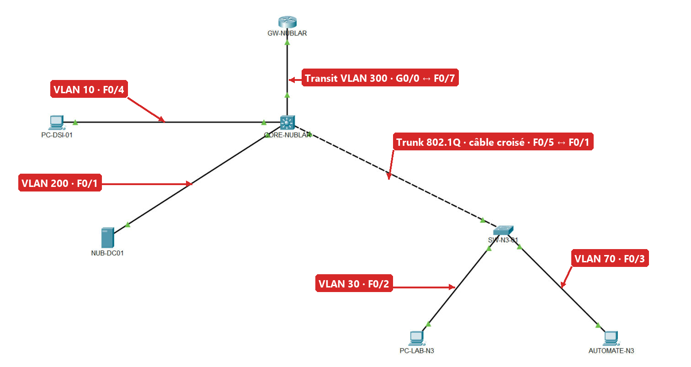
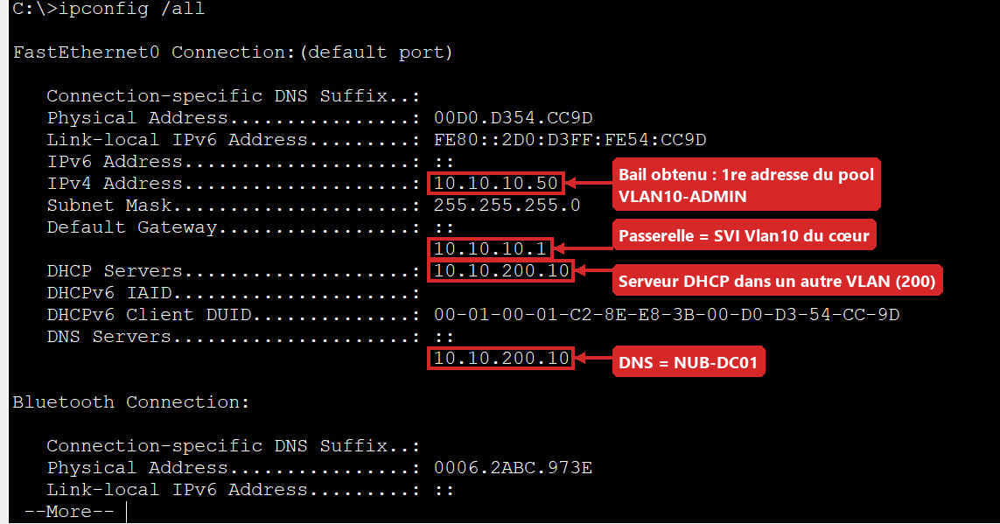
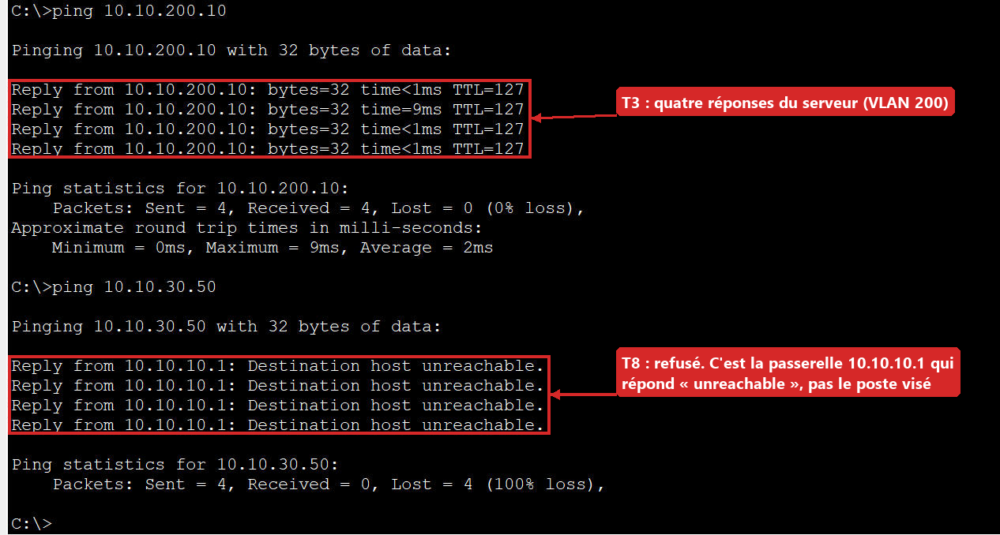
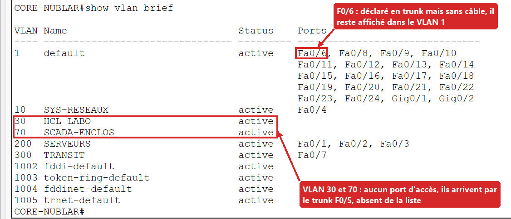
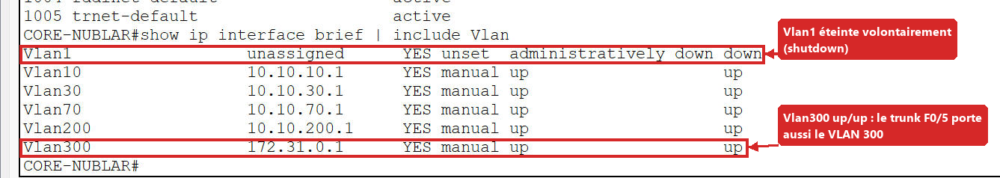
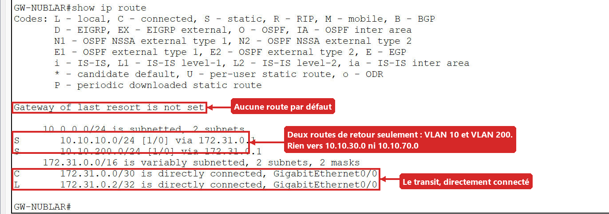
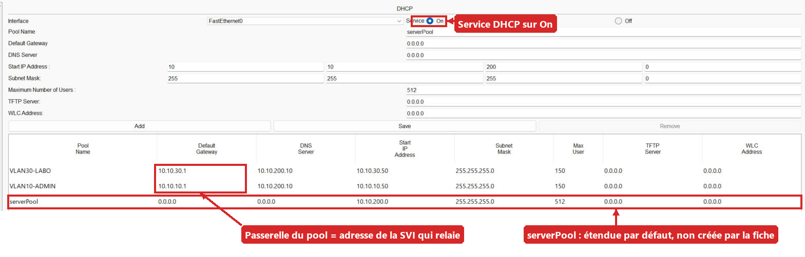
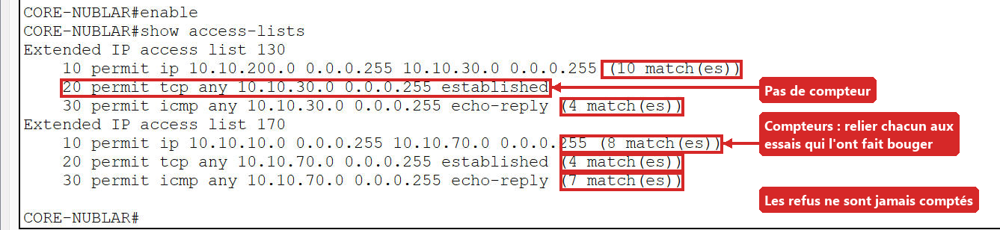
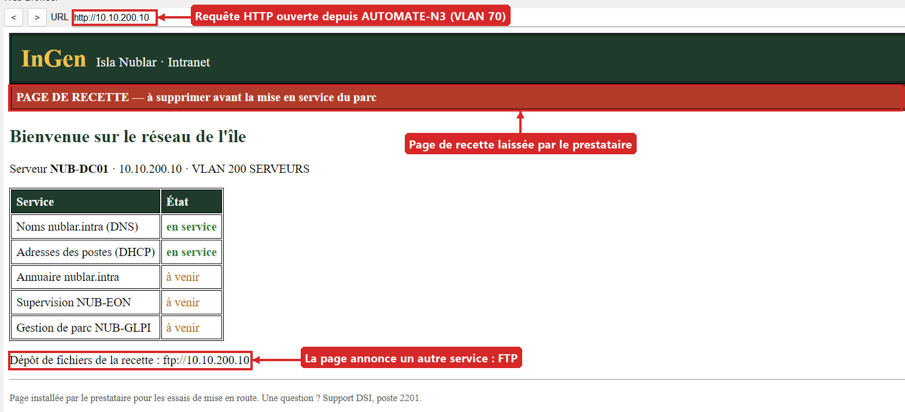
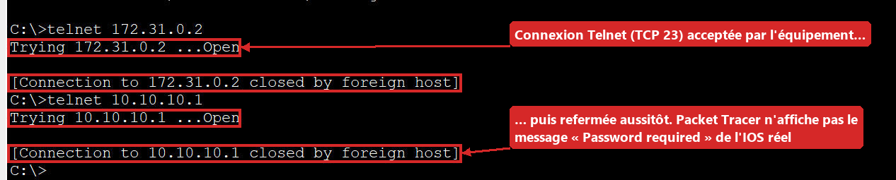

La demande de votre responsable
Vous arrivez sur un réseau que vous n’avez pas construit. Le prestataire nous a laissé un dossier, celui des parties 7 et 8 du livret, mais aucun environnement de test. Je ne laisserai personne toucher à un équipement de production sans avoir d’abord répété son intervention ailleurs.
Construisez d’abord une maquette fidèle de la partie du réseau sur laquelle nous allons travailler cette année. Faites ensuite l’état des lieux de sa configuration. Je ne veux pas un résumé du dossier : je veux ce que les équipements disent eux-mêmes, chaque valeur prouvée par une commande. Depuis le précédent Nedry, la direction ne fait plus confiance à une documentation que personne n’a vérifiée.
Pour finir, dites-moi ce que ce réseau laisse réellement passer, comparé à ce que notre politique de sécurité annonce, et prouvez chacune de ses faiblesses. Ne corrigez rien : chaque correction fera l’objet d’un projet.
Ce que vous modélisez, et ce que vous ne modélisez pas
Vous ne reproduisez pas tout le système d’information d’Isla Nublar. Vous construisez le réseau d’apprentissage : sept équipements, cinq VLAN. C’est un extrait fidèle du site, avec les mêmes noms, les mêmes adresses et les mêmes VLAN. Il servira de cadre à tous les projets de l’année.
Documents utiles : fiche de montage ; livret, parties 7, 8 et 10.

| Modélisé ici | Pas modélisé ici | Où il apparaîtra |
|---|---|---|
| GW-NUBLAR, CORE-NUBLAR et un seul commutateur d’accès, SW-N3-01 | Les cinq autres commutateurs d’accès | Jamais : SW-N3-01 suffit à les représenter |
| VLAN 10, 30, 70, 200 et 300 | VLAN 20, 40, 50, 60 et 100 | VLAN 100 : projet Wi-Fi visiteurs (chantier 6) |
| NUB-DC01, réduit à DHCP et DNS, plus la page de recette du prestataire | L’annuaire, Hyper-V, les neuf autres serveurs | Projet annuaire (chantier 4), sur machines virtuelles |
| Un automate, simulé par un PC en adressage statique | Les quatre coffrets d’enclos, SCADA-HMI | Variante OT de la fiche de montage, annexe B |
| La liaison de transit vers GW-NUBLAR | La sortie Internet, la DMZ, le VPN | Projets sortie Internet et DMZ (chantiers 9 et 15) |
Rappel de cours — Modéliser, ce n’est pas tout reproduire
Un modèle se juge à sa capacité à faire apparaître les mécanismes qu’on veut étudier, pas au nombre d’équipements. Le réseau d’apprentissage contient au moins un exemplaire de chaque mécanisme dont les projets ont besoin :
- un trunk 802.1Q entre deux commutateurs ;
- un routage inter-VLAN par SVI sur un commutateur de niveau 3 ;
- un agent relais DHCP, avec un serveur placé dans un autre VLAN que ses clients ;
- deux listes de contrôle d’accès étendues, posées en sortie ;
- un cloisonnement obtenu par l’absence de route de retour ;
- un VLAN industriel qui ne doit rien émettre.
Ajouter les cinq autres commutateurs d’accès ne ferait apparaître aucun mécanisme nouveau : ce serait du temps de saisie, pas de l’apprentissage. À l’inverse, un modèle a des limites, et il faut les connaître : Packet Tracer ne sait pas faire d’annuaire, un PC ne se comporte pas comme un automate, et un serveur simulé ne connaît que les services de son onglet Services. Un test réussi sur la maquette ne prouve quelque chose sur le réseau réel que si le mécanisme testé y est fidèlement reproduit. Le compte rendu vous le fera dire.
Phase 1 : modéliser
Suivez la fiche de montage de bout en
bout, étapes 1 à 10, jusqu’au jeu d’essais T1 à T10 compris. Enregistrez votre fichier
sous INGEN-Nublar-G<xx>.pkt.
La configuration à saisir est volontairement fautive : aucun mot de passe, Telnet non interdit, VLAN natif laissé à 1, filtrage posé dans un seul sens. Ne corrigez rien, même si un défaut vous saute aux yeux : notez-le. C’est lui que vous devrez prouver en phase 4. Une maquette « améliorée » fausserait l’audit et tous les projets qui en partiront.
Les dix essais T1 à T10 de la fiche de montage sont conformes, y compris les trois
échecs attendus (T7, T8, T10). Les trois équipements Cisco ont été enregistrés par
copy running-config startup-config. Faites tout de suite une copie de
sauvegarde de votre .pkt : ce fichier sera le point de départ de chaque
projet, et il doit rester dans l’état livré.

no shutdown. Le seul lien en pointillés est le câble croisé du trunk.

Phase 2 : relever l’existant
Vous remplissez les tableaux 2 à 8 de la fiche d’audit. Chaque valeur provient d’une commande passée sur votre maquette, jamais de la fiche de montage ni du livret, et cette commande est notée en face de la valeur. Plusieurs valeurs demandées n’existent dans aucun document : les adresses MAC, les baux obtenus, les compteurs des listes. Elles ne peuvent venir que de votre fichier.
| Pour relever… | Commande | Sur |
|---|---|---|
| Le modèle et la version du système | show version | Les trois équipements Cisco |
| Les VLAN et leurs ports d’accès | show vlan brief | CORE-NUBLAR, SW-N3-01 |
| Les trunks, leur VLAN natif, les VLAN qu’ils transportent | show interfaces trunk | CORE-NUBLAR, SW-N3-01 |
| Le mode réel d’un port (access, trunk, négociation) | show interfaces <port> switchport | CORE-NUBLAR, SW-N3-01 |
| Qui est branché où | show mac address-table, show cdp neighbors | CORE-NUBLAR, SW-N3-01 |
| Les adresses et l’état des interfaces | show ip interface brief | Les trois |
| Le relais DHCP et les listes appliquées | show ip interface Vlan10 (puis Vlan30, Vlan70, Vlan200) : ligne Helper address. Pour les listes, show running-config | section interface Vlan : ligne ip access-group. Dans Packet Tracer, la ligne Outgoing access list de show ip interface indique not set même quand une liste est posée : ne vous y fiez pas | CORE-NUBLAR |
| Les routes et la passerelle par défaut | show ip route | CORE-NUBLAR, GW-NUBLAR |
| Les listes de contrôle d’accès et leurs compteurs | show access-lists | CORE-NUBLAR |
| Les lignes d’administration | show running-config (fin du fichier : line con 0, line vty), show ip ssh | Les trois |
| La configuration IP d’un hôte | ipconfig /all (Desktop → Command Prompt) | Les quatre hôtes |
| Les services d’un serveur | Onglet Services, chaque service ouvert un par un | NUB-DC01 |

show vlan brief sur CORE-NUBLAR. Les VLAN 30 et 70 existent sans aucun port d’accès : ils n’arrivent que par le trunk F0/5, absent de la liste. Regardez aussi où se trouve F0/6, déclaré en trunk mais sans câble.
show ip interface brief | include Vlan sur CORE-NUBLAR. Une ligne par SVI : l’adresse de chaque passerelle et son état. Le filtre | include fonctionne dans Packet Tracer, tout comme | section.
show ip route sur GW-NUBLAR. Quatre entrées et pas une de plus. Les réseaux absents de cette table comptent autant que les présents : un paquet destiné à l’un d’eux n’a nulle part où aller.
Rappel de cours — Ce que la table d’adresses MAC prouve
Un commutateur apprend en lisant l’adresse MAC source de chaque trame
reçue : il note « cette adresse est joignable par ce port, dans ce VLAN ».
show mac address-table restitue cet apprentissage. C’est donc une preuve
du câblage réel, et non du câblage prévu : si PC-LAB-N3 apparaît sur F0/3 de
SW-N3-01, le poste et l’automate ont été intervertis, quoi qu’en dise le schéma.
Deux précautions. La table ne connaît que les équipements qui ont émis une trame récemment : lancez vos pings avant de la lire. Elle oublie une entrée après 300 secondes de silence : une table vide signifie « rien entendu », pas « rien branché ». Sur un trunk, enfin, on voit défiler les adresses de tout ce qui se trouve derrière : sur CORE-NUBLAR, le port F0/5 porte les MAC de PC-LAB-N3 et d’AUTOMATE-N3, dans deux VLAN différents.
Rappel de cours — Une valeur par défaut ne s’affiche pas
show running-config n’affiche que ce qui diffère des valeurs par défaut.
Un port de 2960 jamais configuré ne montre aucune ligne switchport mode,
alors qu’il est bien dans un mode : dynamic auto, qui négocie un trunk avec
quiconque le demande. Pour lire l’état réel, il faut une commande d’état et non de
configuration : show interfaces <port> switchport, show ip ssh,
show ip interface.
C’est un réflexe d’auditeur : l’absence d’une ligne n’est pas l’absence d’une fonction. Plusieurs constats de la partie 10 reposent sur un comportement par défaut qu’aucune ligne ne trahit.
Pour NUB-DC01, relevez tous les services de l’onglet Services, un par un, avec leur état, et pas seulement DHCP, DNS et HTTP. Dans la liste des étendues DHCP, relevez toutes les étendues, y compris celle que vous n’avez pas créée. Ce que Packet Tracer active par défaut fait partie de l’existant : un auditeur ne relève pas seulement ce qu’il s’attend à trouver.
Phase 3 : mesurer les flux
Les essais A1 à A17 complètent le jeu d’essais T1 à T10 : ils testent les deux sens de chaque échange et ouvrent une vraie session TCP. Pour chacun, notez le résultat obtenu, puis jugez-le par rapport à deux référentiels distincts.
Rappel de cours — Un audit compare à quelque chose
« Conforme » ne veut rien dire tant qu’on n’a pas dit à quoi. Ici, deux référentiels coexistent, et ils ne disent pas la même chose :
- L’état documenté : la matrice des flux de la partie 7 décrit ce que la configuration livrée produit, faiblesses comprises. Un écart signale une erreur de montage : votre maquette n’est pas fidèle.
- La politique annoncée : les quatre règles de la partie 3 (« Politique de flux annoncée ») disent ce qu’InGen veut. Un écart signale une faiblesse de la configuration : c’est un constat d’audit.
Un essai peut donc être conforme à l’état documenté et contraire à la politique. Exemple : un automate qui joint un serveur. Ces essais-là sont précisément ceux qui intéressent votre responsable.
Dans Packet Tracer, le premier écho d’un ping est souvent perdu pendant la résolution ARP. Un « 3 réponses sur 4 » est un succès. Un essai n’est un échec que s’il échoue deux fois de suite. Pour savoir où meurt un paquet, rejouez l’essai en mode Simulation, filtré sur ICMP.
Une fois les essais terminés, remplissez la matrice des flux observée (tableau 10
de la fiche), puis lisez show access-lists sur CORE-NUBLAR (essai A17) :
chaque compteur doit pouvoir être relié aux essais qui l’ont fait bouger.

show access-lists après un passage unique des essais (chaque ping joué une fois : A4, A6 et A10 ne sont que T3, T6 et T5, et ne s’ajoutent pas), compteurs remis à zéro au préalable (clear access-list counters, qui ne modifie pas la configuration). Vos chiffres dépendront de vos essais et de leurs répétitions. Ce qui compte, c’est de savoir dire quel essai a fait bouger chaque ligne. Les refus, eux, ne laissent aucune trace.Phase 4 : prouver les constats
La partie 10 du livret recense seize constats. Les dix premiers se vérifient sur votre maquette. Pour chacun, la fiche (tableau 11) vous demande la commande ou l’essai qui le prouve, l’extrait de sortie qui le montre, sa famille (faille, qualité, conformité) et le chantier qui le traitera.
Le livret décrit chaque constat. Ce qu’il ne peut pas faire à votre place, c’est le montrer sur votre réseau. Une ligne de la fiche ne vaut des points que si l’extrait vient de votre maquette et si la commande citée affiche réellement ce que vous affirmez. À l’oral, on vous demandera de la rejouer.
- Pour le constat 1, un ping ne suffit pas à convaincre. Montrez une session TCP complète, ouverte par l’automate (essai A13), puis expliquez pourquoi la liste 170 ne l’a pas empêchée.
- Pour les constats 7 et 8, souvenez-vous du rappel sur les valeurs par défaut. Si une ligne n’apparaît pas dans la configuration, dites quelle commande d’état prouve le comportement. Si aucune commande de Packet Tracer ne le prouve, dites-le aussi, et expliquez comment vous le prouveriez sur le matériel réel.
- Pour le constat 2, l’essai A16 montre ce qui se passe aujourd’hui. Expliquez pourquoi ce refus n’est pas une protection.

http://10.10.200.10 affiche la page de recette laissée par le prestataire. Une page affichée, c’est une session TCP établie, ouverte par l’automate : c’est le point de départ de votre preuve du constat 1. Lisez aussi la page elle-même, et comparez ce qu’elle annonce à l’état initial que décrit le livret.
Les pièges à éviter
- Corriger en passant. Un
no shutdownou un mot de passe posé « pour tester » rend la maquette fausse pour tous les projets. En cas de doute, repartez de votre copie de sauvegarde. - Relever le papier au lieu de l’équipement. Une valeur sans commande en face n’est pas un relevé. Une valeur qui contredit votre sortie
showest une faute. - Confondre les deux cloisonnements. Un échec peut venir d’une liste de contrôle d’accès ou d’une route de retour absente.
show ip routesur GW-NUBLAR et les compteurs deshow access-listspermettent de trancher. Le refus implicite d’une liste, lui, ne compte rien. - Lire une table MAC vide. Faites d’abord parler les postes.
- Taire un écart. Si votre maquette montre quelque chose que le livret ne dit pas, ce n’est pas forcément une erreur de votre part. Signalez-le dans le compte rendu, sans le corriger.
La fiche d’audit
La fiche est un fichier à part, rangé dans le dossier fiches-a-remplir. Ouvrez-la
dans un navigateur et gardez-la ouverte à côté de Packet Tracer pendant les phases 2 à 4.
- Ce qu’elle contient. Le tableau 1 (identité), les tableaux 2 à 8 du relevé (phase 2), les tableaux 9 et 10 des essais (phase 3) et le tableau 11 des constats (phase 4).
- Chaque valeur avec sa preuve. Notez la commande qui la prouve, entre crochets ou dans la colonne prévue. Une valeur sans commande n’est pas un relevé.
- Vos saisies. Elles s’enregistrent automatiquement, sur le poste et dans le navigateur
utilisés. Pour changer de poste ou garder une sauvegarde, utilisez Enregistrer une copie : vous
obtenez un fichier
.htmlqui contient vos réponses, à rouvrir n’importe où. - Le rendu. Exporter en PDF produit une fiche en A4 paysage, au nom attendu
Projet00-Fiche-G<xx>-Nom.pdf. Imprimée vierge, la fiche se remplit aussi au stylo.
Le compte rendu
Seul. Répondez avec vos propres mots : la fiche montre ce que vous avez relevé, le compte rendu montre que vous comprenez pourquoi.
- Le modèle. Qu’est-ce que votre maquette représente du site d’Isla Nublar, et qu’est-ce qu’elle laisse de côté ? Citez deux simplifications imposées par Packet Tracer. Pour chacune, donnez un exemple de test qui serait réussi sur la maquette sans rien prouver sur le réseau réel.
- Les flux, VLAN par VLAN. Pour les postes d’administration, le laboratoire, les automates et les serveurs, concluez : quels échanges aboutissent, lesquels sont refusés, et par quel mécanisme. Appuyez-vous sur vos essais.
- Deux cloisonnements. A8 et A15 échouent tous les deux. Pour chacun, dites si c’est une liste de contrôle d’accès ou une route de retour absente qui l’arrête, et quelle commande le prouve. Pourquoi le compteur de la liste 170 ne bouge-t-il pas pendant A8 ?
- Le constat n° 1. Expliquez, paquet par paquet, comment la session HTTP de l’essai A13 aboutit alors que la liste 170 est posée sur
Vlan70. Quelle ligne de la liste laisse passer les réponses ? Quelle règle de la politique est violée ? - Ce que le livret ne dit pas. Relevez tout écart entre votre maquette et le livret : un service actif que le livret ne prévoit pas, une étendue DHCP que vous n’avez pas créée, une valeur inattendue. Ne le corrigez pas : évaluez s’il crée une faiblesse, et dites s’il tient au modèle (Packet Tracer) ou s’il existerait sur le serveur réel.
- Les limites de l’audit. Pourquoi les constats 11 à 16 ne se vérifient-ils pas sur votre maquette ? Que faudrait-il y ajouter pour en vérifier un, et dans quel projet ?
- Les priorités. Classez les dix constats dans l’ordre où vous les traiteriez, et justifiez les trois premiers. Votre ordre est-il celui des chantiers 1, 2 et 3 du livret ? Sinon, argumentez.
- Annexe. Les sorties
showet les captures qui prouvent votre fiche, dans l’ordre des tableaux.
Les livrables
Déposez un dossier nommé Projet00-Audit-G<xx>-Nom, où
<xx> est votre numéro de groupe, à l’emplacement et à la date indiqués par
l’enseignant.
| Document | Nom du fichier | Remarque |
|---|---|---|
| Maquette | INGEN-Nublar-G<xx>.pkt | Dans l’état livré, non corrigée : c’est le point de départ de tous les projets |
| Fiche d’audit | Projet00-Fiche-G<xx>-Nom.pdf | Export PDF de la fiche d’audit |
| Compte rendu | Projet00-CR-G<xx>-Nom.pdf | Annexe comprise |
Chaque projet commencera par une copie de INGEN-Nublar-G<xx>.pkt. Une
maquette fausse ou corrigée en douce vous suivra dans tous les projets. Gardez-en deux
copies, sur deux supports.
Ce qui sera évalué
| Élément | Preuves |
|---|---|
| Maquette fidèle à l’état livré : T1 à T10 conformes, rien de corrigé | .pkt |
| Relevé exact, chaque valeur accompagnée de la commande qui la prouve | Fiche, tableaux 2 à 8 |
| Essais joués et jugés par rapport aux deux référentiels | Fiche, tableaux 9 et 10 |
| Dix constats prouvés sur la maquette, classés par famille et rattachés à leur chantier | Fiche, tableau 11 |
| Écarts avec le livret repérés et signalés sans être corrigés | CR, question 5 |
| Explication des mécanismes : ACL en sortie, pseudo-état, route de retour, valeurs par défaut | CR, oral |
| Capacité à rejouer une preuve de la fiche, à la demande, sur sa maquette | Oral |
Vers les projets
Ce travail est le prérequis du Projet 01, qui ferme les constats 2, 3, 5, 6, 7 et 8. On ne corrige bien que ce qu’on a d’abord constaté : votre tableau 11 deviendra la colonne « avant » de chaque recette.
Sur une copie de votre maquette, jamais sur l’original : ajoutez une liste en entrée de
Vlan70 qui ferme le constat n° 1, rejouez A10 à A13, et notez ce qui casse.
C’est un avant-goût du chantier 2, et une bonne question d’oral.